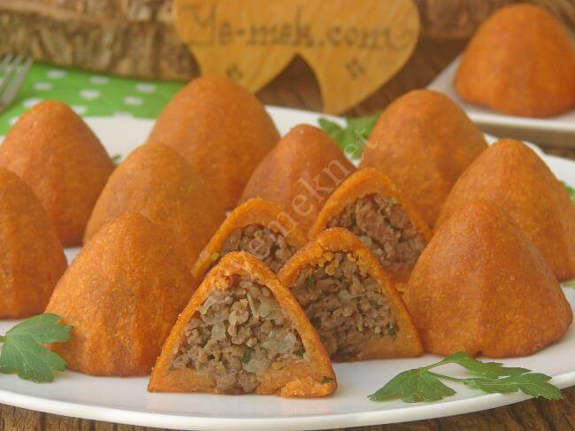

Yemek Tariflerine Hoş Geldiniz
İçli Köfte
Dış Harcı İçin Malzemeler
- 2 su bardağı ince bulgur
- 1 su bardağı irmik
- 1 adet yumurta
- 2 yemek kaşığı un
- 1 tatlı kaşığı biber salçası (isteğe bağlı domates salçası da olabilir)
- Tuz, karabiber, kimyon
- Yoğurmak için az miktarda su
İç Harcı İçin Malzemeler
- 300 g kıyma
- 2 yemek kaşığı tereyağı veya sıvı yağ
- 2 adet kuru soğan (ince doğranmış)
- 1 çay bardağı ince çekilmiş ceviz içi (isteğe bağlı)
- Tuz, karabiber, pul biber, kimyon
Kızartmak İçin Malzemeler
- Sıvı yağ
Yapılışı
- İç harcın hazırlanması:
- Tavada kıymayı yağ ile kavurun.
- Kıyma suyunu salıp çektikten sonra ince doğranmış soğanları ekleyin ve kavurmaya devam edin.
- Baharatlarını ve cevizi ilave edin, güzelce karıştırıp soğumaya bırakın.
- Dış harcın hazırlanması:
- Bulguru ve irmiği geniş bir kaba alın, üzerine sıcak su gezdirip 5 dakika kadar bekletin.
- Yumuşayan bulgura yumurta, un, salça, tuz ve baharatları ekleyin.
- Ara ara su ekleyerek yoğurun. Elinize yapışmayan, elastik bir hamur elde edin.
- Şekillendirme:
- Hamurdan ceviz büyüklüğünde parçalar koparın.
- Elinizi hafif ıslatarak ortasını oyar gibi açın, ince bir tabaka oluşturun.
- İç harçtan koyup kapatın, oval ya da yuvarlak şekil verin.
- Pişirme:
- Kızartma yöntemi: Bol kızgın yağda altın sarısı olana kadar kızartın.
- Haşlama yöntemi: Tuzlu kaynar suda 5–6 dakika kadar haşlayın.
👉 İçli köfte sıcak servis edilir, yanına yoğurt veya ayran çok yakışır.